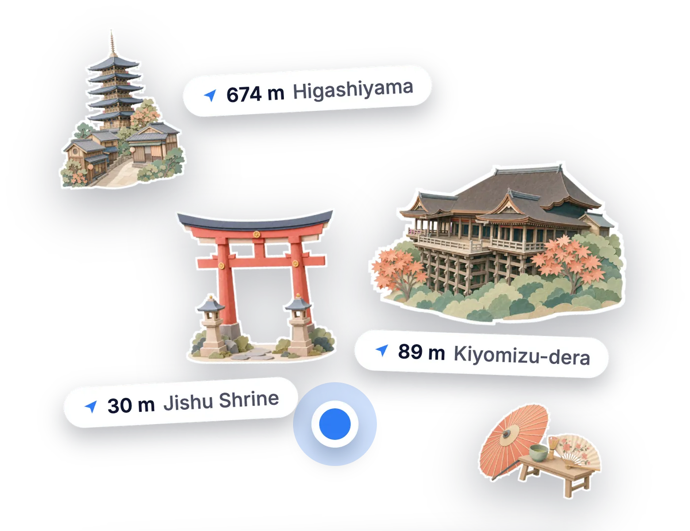
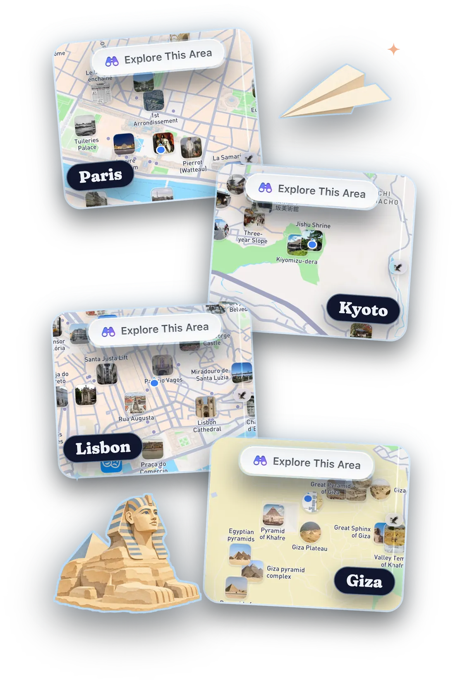
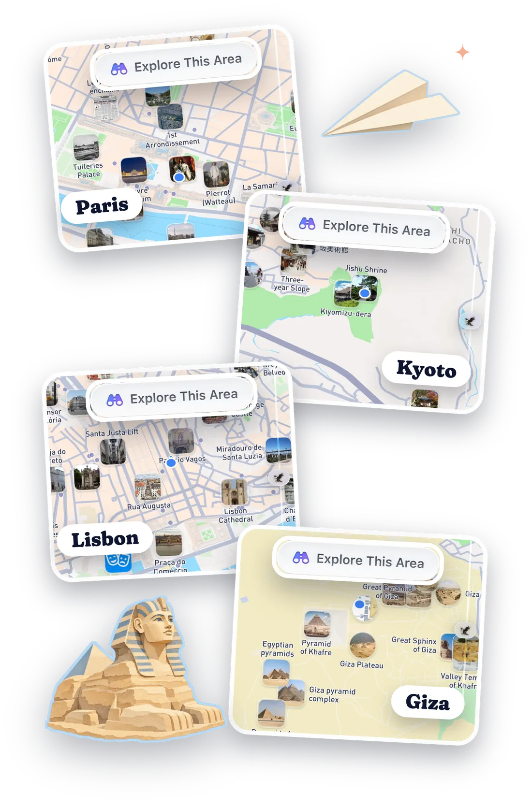
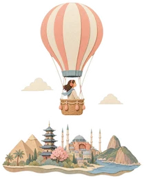
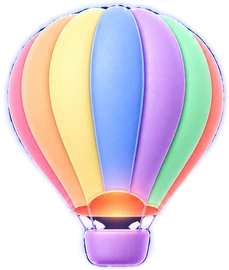
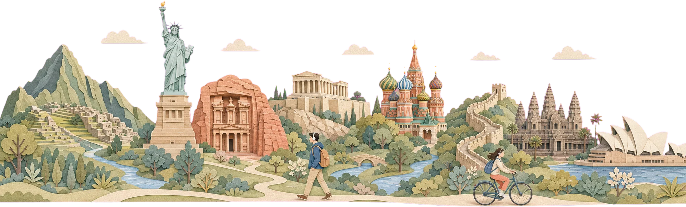

![]()
Learn the backstory of any place on Earth.
Your personal tour guide, worldwide.


Tour 1 million+
landmarks and cities.
Explore Featured Cities like Rome, Paris, Tokyo and Rio, or move the map anywhere and hear what’s there.
- Rome
- Paris
- London
- New York
- Istanbul
- Athens
- San Francisco
- Tokyo
- Kyoto
- Osaka
- Cairo
- Rio de Janeiro
Premium-qualityaudio tours that play as you move.
Golden Gate BridgeNarrated by Enzo
0:000:26
Hear the rest.

Discover monuments, culture, and history nearby.
- Browse through landmarks near you.
- Tap one and listen to its story.
- Turn on Auto Tour and Argo plays one nearby landmark after another, so you can keep walking and keep listening.


Or explore the world from home.
Move the map anywhere and tap Explore This Area to hear what’s there, even from your couch.

Listen your way.
Hands Free
Tours keep playing with your phone locked, with controls on the Lock Screen.
Favorites
Save tours to Favorites.
Discovered
See the landmarks you’ve discovered.
At your own pace
No group to keep up with and no schedule to follow. Listen to the places you care about, in the order you like.
Played
Come back to the tours you’ve played.

Get Argo on the App Store.
